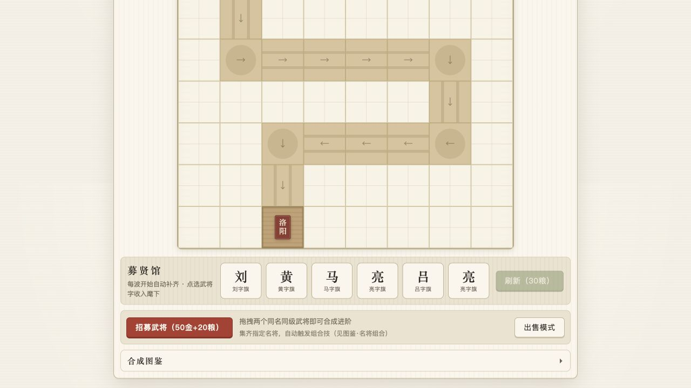

汉字关系成为成长路线
“卒 + 卒 → 士”等普通进阶与“关 + 关 → 关羽”等武将字路线并行，形成 8 条可学习的合成链。

“卒 + 卒 → 士”等普通进阶与“关 + 关 → 关羽”等武将字路线并行，形成 8 条可学习的合成链。
金币用于通用发展，粮食用于招募与刷新；农夫持续产粮，击杀也会缴获粮草，避免单资源最优解。
每波自动补齐武将字，玩家可消耗粮食刷新，并把同字武将继续合成，兼顾期待感与策略修正。
指定武将同时上阵会自动触发组合技，把棋盘布局从单塔强度扩展到阵容构筑。
Interface Proof
开局规则负责建立认知，棋盘、募贤馆与商店共同承载实时决策。